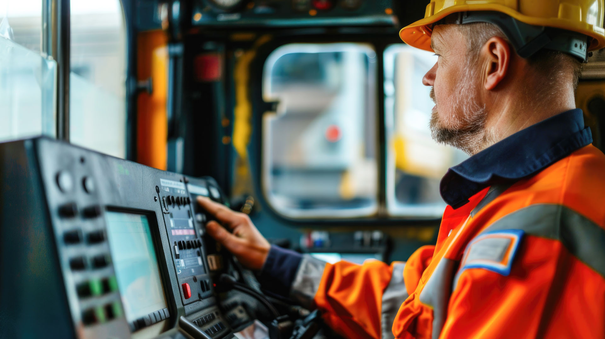

Sicherheit & Qualität
Nachhaltiges Qualitätsmanagement unterstützt Leistungen auf hohem fachlichem Niveau.

Ihr Partner im Eisenbahnbetrieb
Die RT Rail Time GmbH ist Ihr kompetenter und flexibler Partner für Wagenmeister-Dienstleistungen im Eisenbahngüterverkehr.
Einsatz anfragen →Im Detail
Die RT Rail Time GmbH ist Ihr kompetenter und flexibler Partner für Wagenmeister-Dienstleistungen im Eisenbahngüterverkehr. Mit hohem Anspruch an Sicherheit und Qualität bieten wir maßgeschneiderte Lösungen für unterschiedliche Herausforderungen im Bereich der Wagenmeisterdienstleistungen.
Unser Handeln ist auf die Zufriedenheit unserer Kunden ausgerichtet. Präzise Arbeitsweise, zuverlässige Kommunikation und schnelle Reaktion bilden die Grundlage unserer Zusammenarbeit.
Unsere Philosophie
Nachhaltiges Qualitätsmanagement unterstützt Leistungen auf hohem fachlichem Niveau.
Klare Abstimmung und nachvollziehbare Kommunikation schaffen Vertrauen.
Kurze Reaktionszeiten ermöglichen auch die Bearbeitung kurzfristiger Kundenanfragen.
Zusammenarbeit
Einsatzort, Zeitraum und Aufgabenstellung werden aufgenommen.
Qualifikation, Ausrüstung und Verfügbarkeit werden abgestimmt.
Der Auftrag wird sicher und zuverlässig vor Ort bearbeitet.
Ergebnis und weiteres Vorgehen werden transparent kommuniziert.
Notfalldienst 24/7
Bei dringenden technischen Unregelmäßigkeiten erreichen Sie unseren Wagenmeister-Notfalldienst rund um die Uhr unter 0160 1881848.